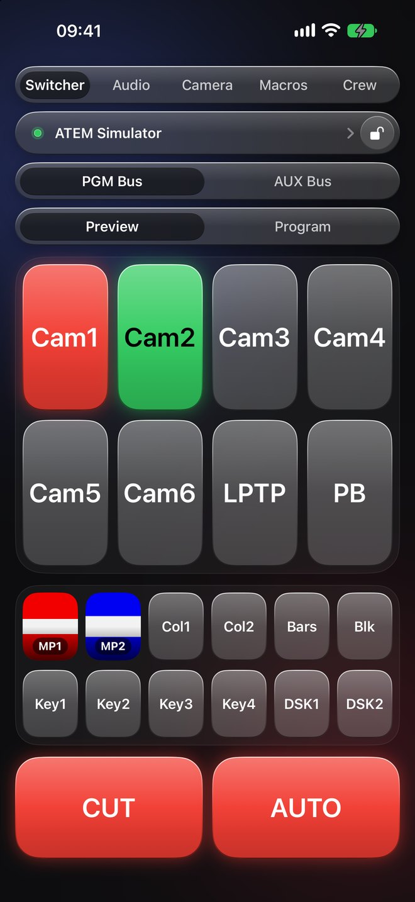
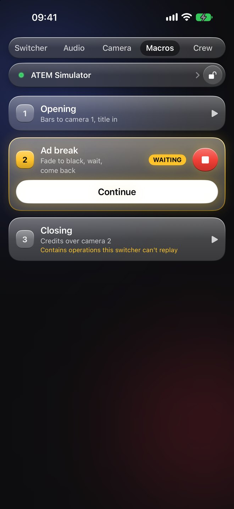
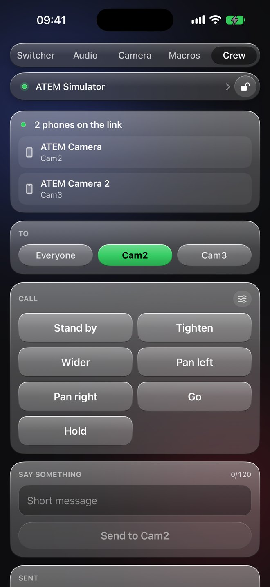

ATEM Control
Пульт для видеомикшеров Blackmagic ATEM.
- iPhone
- ATEM Mini
- Television Studio
- Constellation
- замок на время эфира
Весь показ с телефона: переключить program, подмешать звук, подправить камеру, запустить макрос и сказать оператору, что вам нужно. Экран не гаснет всю передачу.



Микшер
Выбираете шину — program или preview — и переключаете источник, затем CUT или AUTO. Кнопки источников светятся так же, как tally: красный в эфире, зелёный в превью, янтарный, когда источник сразу на обеих шинах. Долгое нажатие назначает кнопке другой вход и ставит на неё фотографию, чтобы находить её в темноте. Тут же медиаплееры, генераторы цвета, цветные полосы, чёрное поле, верхние и нижние кейеры и выходы AUX. На микшере с двумя M/E обе ступени, ME1 и ME2, работают с одной панели.
Звук и камеры
Фейдеры классического микшера и Fairlight с индикаторами: каждый вход Off, On или «звук следует за видео», master может уходить вместе с fade to black, у монитора и наушников свои уровни. Камеры Blackmagic шейдятся через микшер: диафрагма и авто-диафрагма, педестал, гейн, выдержка, ND, баланс белого и оттенок.
Макросы
Макросы, уже записанные в микшер, видны списком с именем и описанием. Тап запускает, запущенный можно остановить, а тот, что ждёт оператора, — продолжить.
Crew: сигналы операторам камер
Поставьте операторам ATEM Tally на телефоны, и им можно отправить короткий сигнал — «Приготовиться», «Крупнее», «Шире», «Пошёл» — или строчку, набранную руками. Одной камере или всем сразу. Сигнал появляется поверх их tally и отдаётся вибрацией, а вы видите, когда его доставили и прочитали. Список фраз ваш: переименовать, переставить, добавить свои. Телефоны общаются напрямую по локальной сети, мимо микшера.
И ещё
- Замок панели: в эфире кнопки не нажмутся случайно, tally при этом видно.
- Приложение разговаривает только с адресом, который вы ввели, и с телефонами операторов в вашей сети.
- Не стримит и не записывает: это пульт, а не кодер.
ATEM Control
A control surface for Blackmagic ATEM switchers.
- iPhone
- ATEM Mini
- Television Studio
- Constellation
- lock for the show
Run the whole show from the phone: cut the program, ride the audio, shade a camera, fire a macro, and tell a camera operator what you need. The screen stays awake from top to tail.
Switcher
Pick the bus — program or preview — choose a source, then cut or take an auto transition. The source buttons follow the tally: red on program, green on preview, amber when a source is on both. Hold a button to put a different input on it and add a photo, so you can find it in the dark. Media players, colour generators, bars, black, upstream and downstream keyers and the AUX outputs are all on the same screen. On a two-M/E switcher, ME1 and ME2 are driven from one panel.
Audio and cameras
Faders for the classic and Fairlight mixers with meters: each input Off, On or audio-follow-video, master can follow fade to black, monitor and headphones have their own levels. Blackmagic cameras are shaded through the switcher: iris and auto iris, pedestal, gain, shutter, ND, white balance and tint.
Macros
The macros already stored on the switcher are listed with their names and descriptions. Tap to run one, stop one mid-run, and continue the one that is waiting for you.
Crew: cues to the camera operators
Give the operators ATEM Tally on their phones and you can send a short cue — Stand by, Tighten, Wider, Go — or a line you type. One camera or all of them. It lands over their tally with a tap on the wrist, and you see when it was delivered and read. The calls are yours: rename them, reorder them, add your own. The phones talk to each other over the local network, not through the switcher.
And more
- Lock the panel so nothing is pressed by accident on air, with the tally still visible.
- The app talks only to the address you enter and to the operators' phones on your network.
- It does not stream or record: this is a control surface, not an encoder.